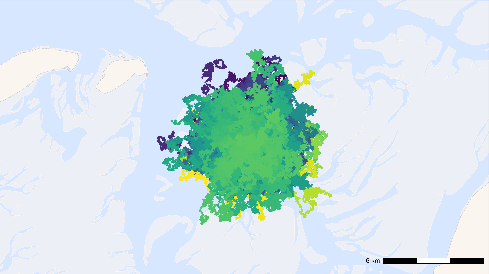
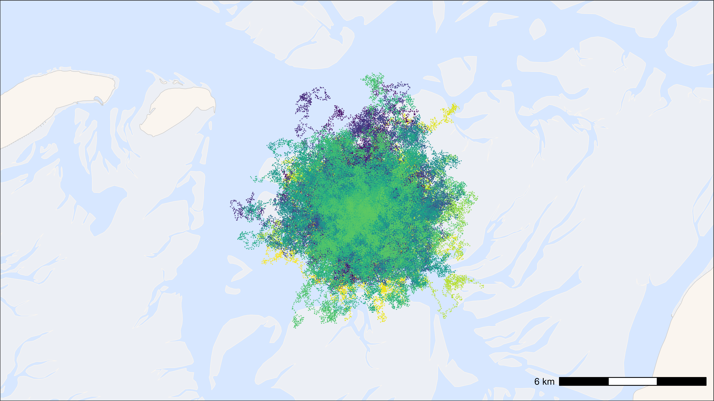
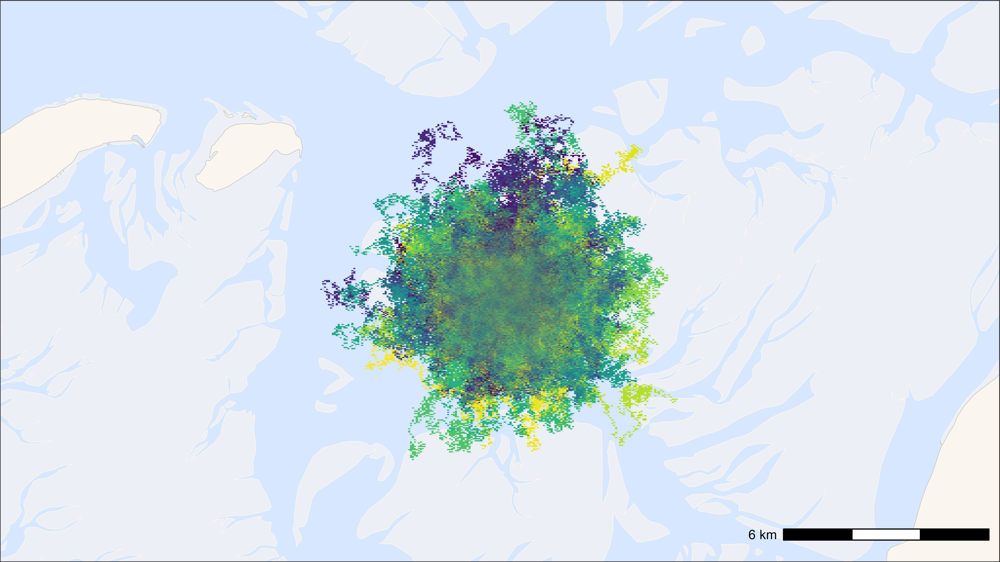
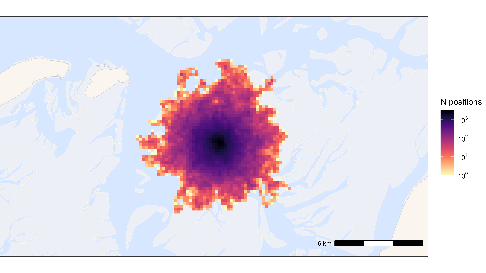

Fast plotting
Johannes Krietsch
Source:vignettes/additional_tutorials/fast_plotting.Rmd
fast_plotting.RmdPlotting in R can get really slow when using big data, like high-throughput WATLAS tracking data, which can consist >50 million localizations in one season. There are two things to consider: the necessary content of the plot (practical side) and plotting performance (technical side).
The necessary content of the plot
For what do you want to plot the data? A quick look or a publication? What do you want to see with the plot? An overview of all positions or a specific part of the track? Depending on your answers choose the smallest suitable dataset. For example, thinning the data (e.g. to one or 10-min intervals) can greatly reduce the number of localization to be plotted and therefore speed up plotting. When plotting a lot of data, it can be better to plot a heat map (which is the fastest way of plotting many localization) than many single points that just overlap and are anyway not seen ultimately.
Plotting performance
One way to speed up plotting is to switch from the R standard
grDevices to ragg, which
provides graphic devices for R based on the AGG library and provides
both higher
performance (up to 40% faster) and higher
quality than the standard raster devices. ragg can be
used as the graphic back-end to the RStudio device by choosing AGG as
the backend in the graphics pane in general options (see).
To further speed up plotting with ggplot2, it helps to
plot points simply as pch = ".", to use geom_scattermore(),
or to summarize locations and plot them as heat map. See below examples
of each option. Note that the run time at the end of each chunk should
be seen as relative and should be faster when the code is not complied,
but simply run.
Load packages and data
This vignette shows different ways on how to plot WATLAS data. Each chunk of code only requires this chunk with loading the data to be run before and is otherwise independent.
Create dummy tracking data and base map
Create dummy tracks of 300 individuals for 1000 steps (3000.000 points).
# set seed for reproducibility
set.seed(123)
# define parameters
n_individuals <- 300 # number of individuals
interval <- 6 # time interval in seconds
n_steps <- 1000 # number of time steps per individual
# reference location (Griend) in UTM Zone 31N
griend <- st_sfc(st_point(c(5.2525, 53.2523)), crs = st_crs(4326)) |>
st_transform(crs = st_crs(32631)) |>
st_coordinates()
# generate initial positions
initial_positions <- data.table(
tag = 1:n_individuals,
x = rnorm(n_individuals, mean = griend[1], sd = 50),
y = rnorm(n_individuals, mean = griend[2], sd = 50)
)
# create tracking data
data <- rbindlist(lapply(1:n_individuals, function(id) {
# generate timestamps
timestamps <- seq.POSIXt(
from = Sys.time(), by = interval, length.out = n_steps
)
# simulate movement with small random steps
x_mov <- cumsum(runif(n_steps, -100, 100))
y_mov <- cumsum(runif(n_steps, -100, 100))
# compute positions
x <- initial_positions[tag == id, x] + x_mov
y <- initial_positions[tag == id, y] + y_mov
data.table(tag = as.character(id), x = x, y = y, datetime = timestamps)
}))
# Create base map
bm <- atl_create_bm(data, buffer = 3000)Standard ggplot2 with points and tracks
# start time
st <- Sys.time()
# plot
bm +
geom_path(
data = data, aes(x, y, colour = tag), alpha = 0.1,
show.legend = FALSE
) +
geom_point(
data = data, aes(x, y, colour = tag), size = 0.5,
show.legend = FALSE
) +
scale_colour_viridis(discrete = TRUE)
## Time difference of 6.06 secs
ggplot2 with points as pch = “.” and tracks
# start time
st <- Sys.time()
# plot
bm +
geom_path(
data = data, aes(x, y, colour = tag), alpha = 0.1,
show.legend = FALSE
) +
geom_point(
data = data, aes(x, y, colour = tag), pch = ".", size = 0.5,
show.legend = FALSE
) +
scale_colour_viridis(discrete = TRUE)
## Time difference of 2.18 secs
ggplot2 with points as geom_scattermore() and
tracks
# start time
st <- Sys.time()
# plot
bm +
geom_path(
data = data, aes(x, y, colour = tag), alpha = 0.1,
show.legend = FALSE
) +
geom_scattermore(
data = data, aes(x, y, colour = tag), pch = ".", size = 0.5,
show.legend = FALSE
) +
scale_colour_viridis(discrete = TRUE)
## Time difference of 1.72 secs
ggplot2 summarized points in heat map
The larger the grid cell size, the faster.
# Round data to 200 m grid cells
data_heatmap <- copy(data)
data_heatmap[, c("x_round", "y_round") := list(
plyr::round_any(x, 200),
plyr::round_any(y, 200)
)]
data_heatmap <- data_heatmap[, .N, by = c("x_round", "y_round")]
# start time
st <- Sys.time()
# Plot heat map
bm +
geom_tile(
data = data_heatmap, aes(x_round, y_round, fill = N),
linewidth = 0.1, show.legend = TRUE
) +
scale_fill_viridis(
option = "A", discrete = FALSE, trans = "log10", name = "N positions",
breaks = trans_breaks("log10", function(x) 10^x),
labels = trans_format("log10", math_format(10^.x)),
direction = -1
)
## Time difference of 0.25 secs